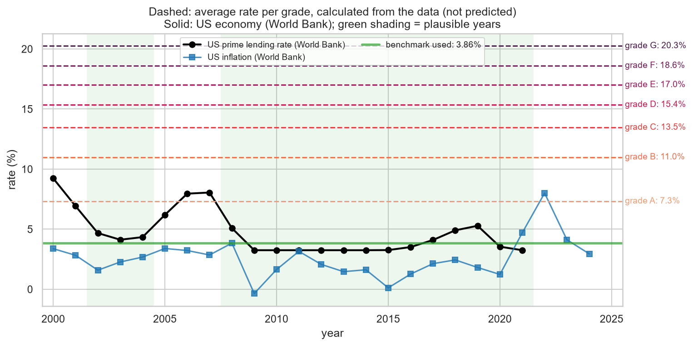

Results
The chosen model in every setting is a Random Forest, for default and for the interest rate. Test results match validation, so the models were not tuned to the validation folds.
Final test set (6,482 applicants, used once)
| Reference rate + grade | Pipeline A grade | Pipeline B newcomer | |
|---|---|---|---|
| PD model (chosen on validation) | Random Forest, isotonic | Random Forest, isotonic | Random Forest, Platt |
| PD cutoff (frozen) | 0.378 | 0.367 | 0.388 |
| F1 test (95% interval) | 0.838 (0.823–0.853) | 0.837 (0.821–0.852) | 0.699 (0.677–0.719) |
| F1 validation | 0.829 | 0.827 | 0.691 |
| Precision / recall | 0.953 / 0.748 | 0.956 / 0.743 | 0.820 / 0.609 |
| ROC-AUC | 0.942 | 0.939 | 0.892 |
| Brier test (validation) | 0.052 (0.056) | 0.053 (0.056) | 0.086 (0.088) |
| ECE (calibration error) | 0.005 | 0.007 | 0.013 |
| Applicants approved | 82.8% | 83.0% | 83.7% |
| Rate model | - | RF regressor on grade + details | RF regressor on PD + details |
| Rate R² test (validation) | - | 0.907 (0.905) | 0.305 (0.305) |
| Rate error (RMSE) | - | ±0.99 pp | ±2.70 pp |
Baselines: "everyone repays" F1 = 0 (accuracy 0.781); PD = 0.219 for everyone gives Brier 0.171; the average rate for everyone gives RMSE 3.24 pp, R² = 0. The A and B intervals do not overlap: the gap between them is real, not noise.

Every model compared (validation, interactive)
Pick a task and a metric. These are 5-fold cross-validation scores on the training set (the test set was not used to choose).
Interest rates on the test set

Do the rates look real? (World Bank check)
Benchmark (the baseline rate). The interest rate that banks charge their safest customers at a given time; it moves with the economy (when the central bank raises rates, every loan gets more expensive). We use the US prime lending rate from the World Bank API. The data has no loan dates, so we use its average over the years that fit the data: 3.86%.
Premium. The extra a borrower pays on top of the benchmark for their own risk: premium = interest rate − benchmark. Example: a 7.3% loan when the benchmark is 3.86% has a premium of 7.3 − 3.86 ≈ 3.4 percentage points (pp).
"Above the benchmark" means the premium is positive: the borrower pays more than the safest customers. In real risk-based lending every borrower should be above the benchmark, and riskier borrowers further above it. Comparing premiums instead of raw rates removes the effect of the economy, so only the pricing of risk is left. Details in 12_macro_check.ipynb.
